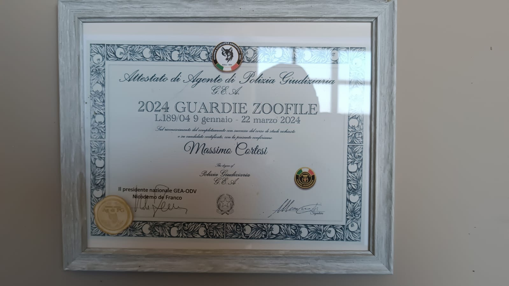

Cani con pedigree, cresciuti in ambiente familiare professionale. Seguiti da guardie zoofile ed esperti comportamentali. Adozione semplice, senza burocrazia invasiva.
Non chiediamo fiducia cieca — la mostriamo.

La Pensione Maya è una struttura certificata ASL a Fraz. San Giuliano Nuovo, Alessandria — gestita da professionisti con oltre 27 anni di esperienza nel Border Collie.
Autorizzazione Sanitaria n° 09/2019 — Città di Alessandria. Ogni cane è seguito da veterinari e professionisti qualificati.
Formazione GEA-ODV L.189/04. Conosciamo le leggi e i diritti degli adottanti. Nessuna pratica invasiva non prevista dalla normativa.
Ogni Border Collie viene valutato e preparato. Conoscerai il carattere reale del cane prima di decidere, senza sorprese.
Solo Border Collie, da 27 anni. Con pedigree certificato e, per molti soggetti, possibilità di conoscere entrambi i genitori.
Chi ama i cani merita rispetto. Niente questionari invasivi, niente visite a domicilio.
La maggior parte delle associazioni impone visite domiciliari, questionari e controlli a vita. Non sono obblighi di legge.
Art. 14 Costituzione: "Il domicilio e inviolabile." Nessuna legge autorizza un volontario privato ad entrare a casa tua per adottare un cane.
Legge 281/1991: modifica del microchip all'anagrafe canina. Tutto il resto lo gestiamo noi.
Risposte dirette. Per altri dubbi scrivici su WhatsApp.
Scrivici o vieni a trovarci. Risponderemo entro poche ore.
Via Duomo 78/A, Fraz. San Giuliano Nuovo
Alessandria (AL)
Visita su appuntamento
Lun – Sab: 9:00 – 18:00
Domenica su appuntamento